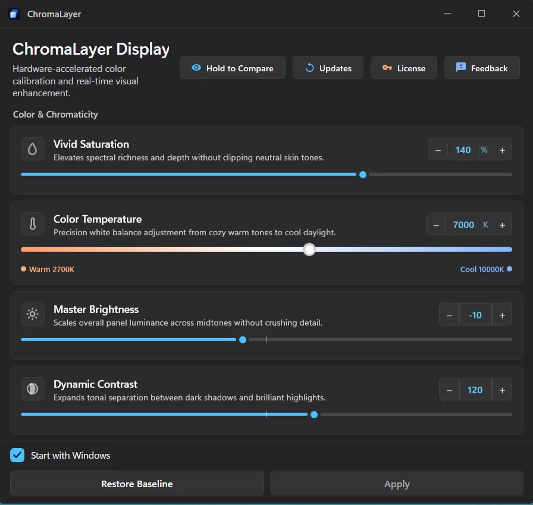

Case study · Own product
A Windows app that gives a laptop's built-in screen seven colour controls, and keeps them applied after every restart, sleep and sign-in.

01 · The brief
Changing colours with Intel's own software was frustrating, and it never gave full control over the screen. We wanted one tool that works across laptops, not just one brand of graphics.
Colours look washed out or too yellow, Windows has no proper colour controls for the built-in screen, and the settings that do exist quietly reset after a restart.
Seven colour controls and five presets, from one small window in the system tray, re-applied after every restart, sleep, sign-in and display change.
02 · The centrepiece
Every control becomes one small piece of maths, and all seven are combined into a single change to the screen. Pick a preset, then drag the divider.
A drawn test scene, rendered in your browser with the app's own colour maths and preset values. The app itself changes your whole screen.
03 · The fight for your screen
The hard part wasn't changing the colours. It was keeping them after Windows quietly undoes them.
Your colours go on the moment the desktop appears, then get checked again a quarter-second and one second later.
Some time between 15 and 25 seconds after you sign in, Windows rebuilds part of its display pipeline and wipes the colours. Most tools lose here.
For the first 30 seconds it checks twice a second whether the screen still shows your settings. After that, every 5 seconds.
Nine planned re-checks cover the whole window, after every sign-in, unlock, wake from sleep and display change.
04 · The hard parts
A colour tool that breaks your screen is worse than no tool. These are the three things it could never get wrong.
Start with a 30-minute call about your idea.
Book a Discovery Call05 · Judgement
It uses the same built-in Windows feature as its own accessibility colour filters, so it needs no admin rights and installs nothing deep in the system.
No HDR, multiple monitors or ARM laptops in version one. The built-in screen had to be right first.
No "eye health", no "calibrated". It makes the screen look better, and says only that.
06 · Result
to a shipped Windows app.
How it's built, in plain words.
07 · In their words
A short, approved quote from a ChromaLayer user goes here, in their own words.Name SurnameRole
08 · Conclusion
Here, Windows resets the colours. On phones, it's the system closing your app or an update changing the rules. Same fight.
The 25-second window comes from how Windows actually behaves after a sign-in, not from a guess.
Its own release channel, and a way back to the original screen that always works.
The same goes for your app: a fixed quote after a one-week Discovery Sprint, a new build every week, and code you own.